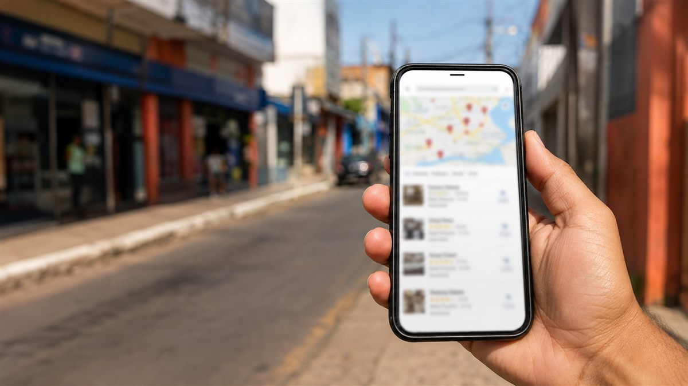

Introdução
Quem tem negócio numa cidade do porte de Balsas-MA já ouviu falar em SEO, mas boa parte confunde isso com "pagar anúncio no Google" ou acha que só empresa grande consegue aparecer na primeira página. Não é bem assim. SEO local é justamente a estratégia pensada pra negócio de bairro, de cidade média, de quem atende uma região específica — e funciona melhor ali do que em disputa nacional.
Este artigo explica o que é SEO local, como ele funciona na prática, quanto tempo leva pra dar resultado e os erros mais comuns de quem tenta fazer sozinho. A Mireroff.Studio trabalha com isso todos os dias, com atendimento presencial em Balsas e região e remoto pra todo o Brasil — então o que vem a seguir é baseado em processo real, não teoria de curso.

O que é SEO local?
SEO local é a otimização de um negócio para aparecer nos resultados do Google quando a busca tem intenção geográfica — seja explícita ("dentista em Balsas") ou implícita (o Google entende, pela localização do celular, que "dentista perto de mim" deve mostrar opções da cidade). Ele reúne três frentes que trabalham juntas:
- Google Perfil da Empresa (antigo Google Meu Negócio): o cartão que aparece no mapa e na lateral da busca, com endereço, horário, fotos e avaliações.
- Site otimizado: páginas que mencionam a cidade e a região de forma natural, com título, descrição e conteúdo alinhados ao que o cliente pesquisa.
- Citações e avaliações: o nome, endereço e telefone do negócio consistentes em diretórios e redes, mais avaliações reais de clientes — isso constrói confiança pro Google e pra quem pesquisa.
Por que SEO local importa pra negócio pequeno em Balsas?
A resposta direta: porque é onde a concorrência é menor e a intenção de compra é maior. Quem pesquisa "landing page em Balsas" ou "clínica veterinária Balsas" já decidiu que quer resolver aquilo perto de casa — não está só pesquisando por curiosidade, como muita gente que busca um termo genérico nacional.
Isso muda o jogo de duas formas:
- Menos concorrentes disputando o mesmo termo. Enquanto "criação de sites" nacional tem milhares de agências brigando, "criação de sites em Balsas" tem um punhado — e é aí que dá pra ranquear no Google de verdade, sem depender só de anúncio pago.
- Cliente mais qualificado. Quem já busca com o nome da cidade normalmente já está mais perto de decidir — o que reduz o trabalho de convencer e aumenta a taxa de conversão de quem chega até o WhatsApp.
Pra quem já tem site mas nunca cuidou disso, o caminho mais rápido costuma ser um trabalho de SEO local feito sob medida, ajustando o que já existe em vez de recomeçar do zero.
Como funciona o SEO local na prática?
Na prática, SEO local segue uma sequência de passos técnicos e de conteúdo — não é um botão que se aperta uma vez só:
- Criar e completar o Google Perfil da Empresa, com categoria certa, endereço exato, horário atualizado e fotos reais do negócio.
- Ajustar o site pra mencionar a cidade e a região de forma natural no título, na descrição e no conteúdo das páginas — sem repetir a cidade de forma forçada.
- Criar dados estruturados (schema) do tipo LocalBusiness, que ajudam o Google a entender endereço, telefone e área de atuação automaticamente.
- Conseguir avaliações reais de clientes satisfeitos — pedir logo após a entrega do serviço costuma ser o momento de maior taxa de resposta.
- Manter consistência do nome, endereço e telefone (NAP) em todos os lugares onde o negócio aparece online.
| Fator | O que é | Impacto no SEO local |
|---|---|---|
| Google Perfil da Empresa completo | Cartão com endereço, fotos, horário e categoria | Alto — principal sinal pro mapa e pro Local Pack |
| Avaliações de clientes | Nota e comentários reais no perfil | Alto — afeta confiança e taxa de clique |
| Conteúdo com a cidade certa | Páginas mencionando a região naturalmente | Médio-alto — ajuda o Google a entender a área de atuação |
| Backlinks locais | Links de outros sites da região | Médio — reforça autoridade local |
| Design do site | Visual, cores, layout | Baixo direto — importa pra conversão, não pra ranquear |
Quanto tempo leva para aparecer no Google?
A resposta direta, sem enrolação: SEO local costuma mostrar primeiros sinais em 4 a 8 semanas, com resultado mais consistente entre 3 e 6 meses — bem mais rápido que SEO nacional, que pode levar de 6 meses a 1 ano pra termos competitivos. Isso acontece porque a disputa é menor numa cidade como Balsas do que numa palavra-chave nacional.
Enquanto o SEO local ainda está subindo, muitos negócios optam por tráfego pago pra acelerar resultado enquanto o SEO ainda não decolou — os dois funcionam bem juntos, um trazendo resultado imediato e o outro construindo uma base que continua trazendo cliente mesmo depois que o anúncio para.
Erros mais comuns de quem tenta sozinho:
- Cadastrar o Perfil da Empresa e nunca mais atualizar (fotos antigas, horário errado).
- Colocar o nome da cidade em excesso no site, o que parece forçado tanto pro leitor quanto pro Google.
- Ignorar avaliações negativas em vez de responder.
- Não ter nenhuma página que fale especificamente da cidade ou região atendida.
Quem já tem um pouco de estrutura e quer ir além do orgânico também costuma somar isso a uma campanha de Google Ads bem configurada, mirando quem já está pesquisando o serviço agora.